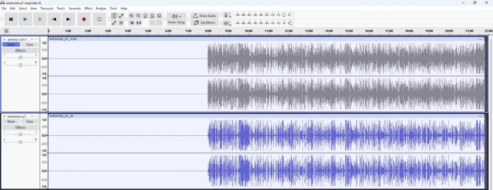

Limpiar el audio de una entrevista con IA: Audacity y DeepFilterNet
Cómo conecté Audacity a Claude para mejorar una entrevista de casi 22 minutos, por qué la primera versión empeoró el sonido y cómo una segunda pasada con DeepFilterNet bajó 21 dB el ruido sin mover una sola muestra.
Matías Gaglio ·
Read in EnglishUna entrevista útil con un audio difícil.
Tenía una entrevista de 21:46 grabada a 48 kHz, con ruido de fondo y una compresión fuerte del archivo original. Los primeros 7:58 debían quedar en silencio, igual que en la edición previa. El objetivo era una voz clara y estable sin cortar, mover ni reemplazar nada del proyecto existente.
Audacity controlado desde Claude.
Audacity incluye un canal de scripting, mod-script-pipe, que permite importar archivos, aplicar efectos y guardar proyectos mediante comandos. Lo conecté a Claude Code a través de MCP. Para el análisis, Claude usó Python con NumPy y FFmpeg para decodificar y comparar los archivos fuera de Audacity.
Una cadena clásica que reveló el problema.
La primera versión usó efectos tradicionales: filtro pasa-altos en 80 Hz, reducción de ruido de 10 dB, menos cuerpo entre 200 y 800 Hz, más claridad entre 2 y 6 kHz, compresor suave, normalización a −16 LUFS y limitador en −1 dB. En los números funcionó: la diferencia entre partes fuertes y suaves bajó de casi 13 dB a 7 dB.
Al escucharla aparecieron cortes y agudos metálicos. El diagnóstico fue concreto: la compuerta de ruido abría y cerraba entre palabras, y la ganancia general subió también el siseo y los artefactos de compresión del archivo de 96 kbps.
IA local en lugar de más efectos.
La solución fue DeepFilterNet, un modelo de código abierto especializado en separar la voz del ruido. Corre sin conexión, así que el audio nunca salió de la computadora, y trabaja de forma nativa a 48 kHz. La alternativa era un servicio web que exige subir la grabación a servidores de terceros.
Limpiar
DeepFilterNet sobre el original, con un límite de atenuación para que la voz no suene artificial.
Ajustar
La misma cadena, sin compuerta, con menos realce de agudos y compresión más liviana.
Reemplazar
Nueva pista en el proyecto con el mismo silencio inicial y la versión anterior silenciada como referencia.
Verificar
Duración, alineación, ruido en pausas, picos y nivel de voz, medidos por código.
Medir antes de declarar terminado.
| Control | Resultado |
|---|---|
| Duración | Igual al original: 21:46.389 y el mismo silencio inicial. |
| Alineación | Correlación cruzada en cinco puntos: de 0 a 3 muestras de diferencia, inaudible. |
| Ruido en pausas | 21 dB menos que la primera versión. |
| Saturación | Pico en −0,97 dBFS. |
| Voz | Nivel parecido al de la versión anterior, algo más bajo. |

El proyecto nuevo se guardó con otro nombre y el anterior quedó intacto. Esa regla vino de mi lado durante el trabajo y es la que ahora aplico a cualquier proceso automático: nunca sobrescribir el material de partida.
Qué me llevo.
- Más procesamiento no es mejor sonido: subir el nivel también sube los defectos que ya estaban.
- La IA local protege el material: una entrevista puede contener información sensible y no tiene por qué subirse a la nube.
- Los números no reemplazan la escucha: las métricas confirman que nada se rompió; el oído decide si suena natural.